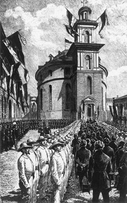
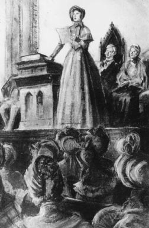

This is a static copy of the final website maintained by the Roy Rosenzweig Center for History and New Media.
David Thelen
Exploring the past through the vehicle of translation, we see not only difficulties in enacting the Enlightenment dream of a cosmopolitan republic of letters in which people understand each other across language barriers but also a wondrous range of meanings and uses brought to life from a single text by individuals working in different cultures. In the essays that follow, we see individual translators stumble and create as they try to convey their understanding of a text to readers unfamiliar with its original language. We see cultural filters help and retard them. And as authors of the essays retranslate those translations back into English, we see the original declaration differently, as something both stranger and clearer, with new meanings and possibilities made visible by the different ways that cultures and languages describe the world. Through the eyes of a translator, interest in the declaration was inseparable from interest in the nation it created. The Declaration of Independence was, as Carl L. Becker observed long ago, "an event, or at least the chief symbol of an event of surpassing historical importance, as well as a literary document which set forth in classic form a particular philosophy of politics." Fact and document, "stubborn fact married to uncompromising theory; . . . an inspiration or a scandal to half the world, but in any case impossible to be ignored, with difficulty to be accepted or rejected the one without the other." 1In the following essays authors indeed report that translators often treated fact and text as inseparable. Many translations were originally published in books that included translations of other American founding documents or assessments of American experience since independence. In Spanish-speaking lands such as Mexico, for example, translators joined the Declaration of Independence to the Constitution because declarations of founding principles were by tradition preambles to constitutions that established forms of government to fulfill those principles. To its earliest translators the declaration seemed original less for what it said than for what it did. For Italian and French readers, as Tiziano Bonazzi and Elise Marienstras and Naomi Wulf report, the Declaration of Independence was significant because it put very familiar European ideas into practice. For German commentators, as Willi Paul Adams observes, the battlefields on which colonists fought for independence were battlefields where Europeans were putting the Enlightenment into practice in a place free from traditions and practices that constrained application of those ideas in Europe. And so the United States launched its career as a place for experimenting with European ideas, pushing them further, seeing how they could be assembled in new ways, seeing how they could be applied and with what consequences. And the declaration became a text onto which people from other places could project dreams growing out of their own distinctive histories. 2 Not only did translators imagine the declaration and its new nation within a European history of ideas, but, as Becker noted, they situated the text and fact of American independence in an eighteenth-century world that was much more transnational than the setting of the Revolution would appear in the more nation-centered nineteenth and twentieth centuries. In the transnational eighteenth century, many revolutionaries saw themselves not only as making nations but also, perhaps even more important, as making a revolution against established privilege, of putting freedom into action, of moving beyond social hierarchy and imperial conflict to a world where people could shape their own fates. Their cause was the cause of humanity and freedom, not of their individual nations. The American text and experience provided materials for them to envision new possibilities, to situate their own circumstances in a larger flow of history in which the Enlightenment had brought forward the pursuit of happiness as something desirable and for the first time attainable. In the 1770s, Congress believed that Benjamin Franklin and John Adams could better advance the cause by moving eastward to Paris and the Hague to fire up European dreams (and French and Spanish hostility toward the British), and the marquis de Lafayette, Baron von Steuben, Count Pulaski joined Thomas Paine by moving westward to the battlefields of America. Five days after it was signed, the Declaration of Independence had been translated and was circulating in German on the streets and in the homes of Philadelphia so that immigrants from German lands could join in this debate among English speakers. The first French translations were published in the Netherlands to escape the censors and smuggled into absolutist France. And the battlefields themselves were remarkably transcultural places where it was often hard to hear English. Thousands of soldiers marched from Rhode Island to Yorktown under commanders who addressed them in French. German-speaking mercenaries were lured to the New World to provide a large contingent of the soldiers who fought under the English flag. 3It began to look as though the war in North America was just another phase of the European -- particularly British-French -- wars. From their diplomats in England, Frederick the Great in Prussia and Catherine the Great in Russia carefully followed the course of the American Revolution worrying what it meant for their ambitions. In Europe's old regime the Declaration of Independence presented issues of revolution and privilege and even of religion more than of nationality. Residents of Amsterdam declared their immediate identification with the American side in the Revolution, which had triggered memories of the Dutch Republic born in 1581 in their own declaration of independence from the Spanish Crown. But the Protestant stadtholder of the Netherlands (himself a hereditary executive) sided with the Protestant king of Great Britain, quashed the Amsterdammers' revolt, and thereby set in motion revolutionary events that rocked the Netherlands. 4 As they report how translators used this American document for their own agendas, authors of the following essays help us to recognize the tensions, evasions, and silences that Thomas Jefferson and Congress placed in the text when they used it to declare independence in 1776. From the different approaches of translators, we can see more clearly that the declaration's authors were trying to do three very different things. Its first purpose, as a justification for (a successful) revolution, led people around the world to draw on it as they enacted their own revolutions from the eighteenth-century French revolt against the ancien régime to twentieth-century anticolonial revolutions. Ho Chi Minh explicitly quoted two "immortal" sentences from the declaration to open his 1945 Declaration of Independence of the Democratic Republic of Vietnam as he launched its struggle against French colonialism. 5And people translated and inserted the declaration in worldwide moments of revolution such as 1848 (when German revolutionaries discussed it as a model in the Paulskirche in Frankfurt and American women patterned their declaration of rights after it in the Wesleyan chapel in Seneca Falls, New York). The declaration was on the minds and in the words of revolutionaries from the Decembrists in Russia in 1825 to the Tejanos in their 1836 drive for independence from Mexico, from the movement for popular rights in late-nineteenth-century Japan to the revolution of Sun Yat-sen in early-twentieth-century China (as Tadashi Aruga and Frank Li report in this issue) and, for that matter, to the revolutionaries who made the Confederate States of America in the 1860s.  Two images of the worldwide revolutionary moment of 1848: on this page, the  Elizabeth Cady Stanton (1815-1902) addresses the first woman's rights convention, The declaration's second purpose was to establish a people and a nation. In the nineteenth century, as people came increasingly to believe that nation and nationality could best fulfill their struggles for freedom, they turned the declaration's eighteenth-century guide to the future of mankind into a nineteenth-century guide to nationality and nationhood. Amid conflicts between local and national authority that often erupted into civil wars as new nation-states consolidated their authority over rebellious provinces, translations brought out choices and ambiguities in the relationship of popular sovereignty to nationhood, ambiguities hidden or suppressed in the declaration's proclamation of freedom. The declaration, as its third purpose, proclaimed civic objectives for a nation-state and defined rights that citizens should possess and enjoy. One of its chief uses was to help people formulate ways to measure the behavior of states, including the state that claimed the declaration as its origin. Translators reflected differences in linguistic and cultural traditions as well as different personal agendas as they grappled with "Life, Liberty, and the pursuit of Happiness" and "all men are created equal" -- to say nothing of Jefferson's claim that these rights were "self-evident." The true measure of the document's longevity may well be the amount of criticism those truths have gathered since 1776, as Moses Coit Tyler and Carl Becker suggested long ago. In the following essays we learn how and why twentieth-century Italian students criticized the familiarity and banality of its civic ideology, French revolutionaries the incompleteness and vagueness of the rights it enunciated, and people everywhere (especially with the rise of movements for equality in the nineteenth century) the gaps between the declaration's ideals and such practices as slavery, Indian extermination, and oppression of workers, women, and minorities. From French, Soviet, or Hebrew perspectives, as essays by Marienstras and Wulf, S. Ilan Troen, and Nikolai N. Bolkhovitinov illustrate, rights should be collective and social, grounded in the daily conflicts of history and society, not the limited individual and political rights that authors of the declaration grounded in a primitive fantasy they called a state of nature. By 1875 Peter Lavrov, a leading Russian populist, like East German translators a century later, proclaimed that the declaration was an eighteenth-century document whose promise of political democracy Americans had undermined over time with rampant capitalism until Americans possessed only a sham kind of freedom. The United States was a bad model because it belonged to the rich; the future, Lavrov and the East Germans believed, belonged to the workers. And movements for social justice -- from the struggle that gave rise to a "Working Men's Declaration of Independence" in 1829 and working people's internationals to those for abolition of slavery and for women's rights -- demanded that Americans themselves translate the declaration and revise their practices to better fulfill the Founders' words. 6 Translators around the world faced a common challenge, as we learn in the following essays, before they began to translate a single world. Should they try to bring the text close to readers in the present, to make it comprehend and speak urgently to their circumstances and aspirations, or should they make it distant, the voice of a few dozen men in Philadelphia in 1776? In combining a universal appeal with particular grievances, Jefferson himself created this tension between timeless and time-bound. Translators could make the declaration more familiar by emphasizing its universal appeals or make it intimate by russifying or japanizing it, giving it resonating eloquence in their readers' languages even if those words and allusions were not in the original. Frank Li reports how a Chinese translator even imported words from The Analects of Confucius into his rendering of the declaration into Chinese. 7Or translators could make the text strange and distant by emphasizing the uniqueness of the grievances, or of Philadelphia in the British Empire in 1776 or by emphasizing the evils of popular government or the failure of the United States to put the declaration's ideals into practice. And perhaps the most common agenda that led translators to emphasize its uniqueness was simply the educational and historical one of wanting to acquaint readers with the American Revolution in the classroom or elsewhere. As translators presented it, the declaration ranged from a vision to be realized to a nightmare to be avoided. Fukuzawa Yukichi, a leader of the Meiji Enlightenment, made the first Japanese translation of the declaration into a best seller in 1866, which he hoped would inspire Japanese readers to throw off the encrusted hierarchy of Tokugawa Japan. He revealed his dream by the way he chose to translate Jefferson's declaration that people would revolt only when they faced extreme provocation. The declaration had proclaimed: "Prudence, indeed, will dictate that governments long established should not be changed for light and transient causes; and accordingly all experience hath shown that mankind are more disposed to suffer, while evils are sufferable, than to right themselves by abolishing the forms to which they are accustomed." But Fuzukawa, as Aruga has retranslated his words back into English, turned these words to a different conclusion in Japanese: "To a timid conservative mind, it may seem that a government established long ago cannot be changed easily and lightly." 8Only timid and conservative people would fail to appreciate that the proper and normal course was for people to resist oppression. He tried to bring the American case close to Japan, to make it an inspiration for overthrowing established society in Japan. At the opposite pole stands the Nazi translator, Friedrich Schönemann, who in 1942 sought to draw Nazi lessons from the American Revolution for German readers. In contrast to many other translators, Willi Paul Adams shows us, Schönemann rendered a superb re-creation of the message and words of the original declaration, but he dramatically distanced the American from the German experience by insisting that declaration and Revolution were the Schicksalsgang, the fate, of Americans. The inevitable fate of Germans was to be carried along by the force of their own history toward opposition to the doctrines of human agency and popular government expressed in the Declaration of Independence that he had so beautifully translated. 9While Fukuzawa drew the American experience near, perhaps too near, Schönemann pushed the declaration far away from his German readers, arguing that fate and force shaped the course of history, one fate for each nation, and individuals would be carried along, powerless, to their fates. For Russian translators, Marina A. Vlasova shows, the difficult moment for making a distant experience graspable came when they tried to convey in Russian what Jefferson had meant by the phrase "to throw off such Government, and to provide new Guards for their future security." In 1863, 1897, 1991, and 1993, translators chose a term that she retranslates as the more abstract and impersonal "guarantees of security," and in 1901 the translator chose a term that she retranslates as "principles and forms of the new government which will guarantee the security and welfare of the state." Most Russian translators dealt with the difficulty of imagining how government could guard people's security by retreating into abstraction and vagueness. But Vlasova finds trans-lators -- in 1897 and in 1935 -- who overcame their lack of firsthand Russian experience and conveyed Jefferson's goal of creating a government that could provide better guards for people's future happiness by choosing the terms strazhy or okhrana in Russian. 10 French translations in the eighteenth century and a Chinese one in 1901 turned the original text's appeal to humanity into the historical record of a distant and particular nation by turning its voice from the first person "we" and "us," the oppressed and the actors, often conflated by Jefferson with "the people" who are revolting, into a third person, "the Americans," as in the Chinese 1901 retranslation: "The privations suffered by Americans are extreme." The insertion of Americain into translations, Marienstras and Wulf conclude, "introduces a distance between the French reader and the translated text and renders the Declaration of Independence all the more foreign to the French public." 11 To listen to people in other lands agonize about how to translate the declaration's most familiar terms is to interrogate afresh the choices made by the declaration's authors. The difficulties start right at the beginning: "When in the Course of human events, it becomes necessary for one people to dissolve the political bands which have connected them with another." One people? Another people? What did Jefferson mean by inventing "one people"? The German American translators for the Pennsylvanischer Staatsbote in the summer of 1776 wavered between Volk (meaning people with a deeply shared cultural past) and Einwohner (meaning simply inhabitants of a place). Jerzy Kutnik reports that the choice of how to translate "people" has been particularly difficult for Poles. In the most recent translation of 1992, translators chose narod (nation) as the best Polish synonym for "people" instead of lud (which more literally means people). The Communist translators had preferred lud (people) because it carries the connotation of "those people who are not nobles, not high in rank, position," the part of a nation that most nearly resembled the proletariat. And narod had been the rallying cry of the middle- and upper-class Poles in the nineteenth century who sought to convert the lower classes to assert Polish national identity even as the Russian, German, and Austro-Hungarian governments had divided what had been Poland between them and left no independent state. The concept of "nation" was precious to the upper classes, who saw it as their responsibility to teach the uneducated masses (the lud ) the importance of narod. So in making this choice Polish translators had to pick their way through distinctions involving nationalism, class, and ideology and Germans had to pick between place of residence and shared cultural pasts. The first Japanese translator, Fukuzawa, translated "one people" (Americans) as a "kin group of people" who were declaring independence from "the government of another nation" (British). And for translators in the middle of the French Revolution, the "people" were meant to assume the sovereign essence of the "nation" formerly held exclusively by the king, report Marienstras and Wulf. "Please ponder the enormous difference existing between a new [ naissant ] people recently born to the universe, a colonial people breaking away from a distant government, and an ancient people" like the French, declared a member of the National Assembly, Trophime Gerard, comte de Lally-Tollendal. French translators and revolutionaries envisioned the American people as "new men" enjoying their "primitive sovereignty . . . in the bosom of nature," as a delegate to that assembly, Pierre-Victor Malouet declared. 12 The French wanted to ground the "people" and popular sovereignty, not in nature, which they associated with a primitive, even biological, state, but in the working of civil society. These translations can lead us to ask: Did any of these choices occur to Jefferson? Why not? What exactly did he mean by "one people"? Suddenly, the familiar becomes at once stranger and clearer. Jefferson's truths were anything but self-evident, as Eugene Eoyang argues in the final essay. Even an idea central to the European Enlightenment -- that the pursuit of happiness was desirable and attainable -- proved extremely hard for French translators to return from Philadelphia to Paris. Four of the nine eighteenth-century French translations replaced the literal word for "happiness" ( bonheur ) with bien-être (well-being), rendering "happiness" as the material absence of disease, poverty, and oppression, and three French translations replaced "pursuit" ( recherche ) with "desire" (désir), "a subjective, even intimate feeling." Jefferson's global, diffuse sense of a right to the pursuit of happiness that states should protect thus became a subjective individual right to wish for an easier and more felicitous personal life, as Marienstras and Wulf report. Spanish Catholic readers, Joaquim Oltra reports, expected that happiness was only attainable in the next world and that this world was a "valley of tears," not a site to pursue happiness. As he reflected on a career in the Soviet state and the post-Soviet regime, Nikolai N. Bolkhovitinov reported that he had long puzzled about why Jefferson had replaced John Locke's ideal of "property" with "the pursuit of Happiness." Although critical of the bourgeois limitations of the declaration, Bolkhovitinov remained convinced from his Russian experience that the pursuit of happiness, the quest for independence, required possession of property, as Locke had said. 13 French and Hebrew translators agonized about whether the right to pursue happiness was a collective or an individual right. The hardest phrase to translate, the one that translators solved differently as they tried to make it close or far, was "the Laws of Nature and of Nature's God." The 1834 Italian translation by Carlo Botta rendered it as le leggi della natura e di Dio and the 1961 version legge naturale e divina. Bonazzi reports: "These are two similar readings that interpret the laws of Nature's God as divine laws, replacing the theist-inspired expression used by the American document with one that reflects the principal tradition of European natural law according to which God the omnipotent and creator of all things cannot be reduced to a mere architect of nature." By altering the eighteenth-century theism, Bonazzi suggests, the translators probably made the document more familiar and accessible to Italians. Fuzukawa rendered the phrase as "the nature of the reason of the physical world and that of the way of heaven" so that it could fit within Confucian understandings. In 1951, however, Takagi Yasaka believed that Japan needed to adopt Christianity to secure democracy, and he tried to make the phrase sound Protestant. 14 New words allow Americans to see old ones more clearly by making them less familiar. Fukuzawa turned "all men are created equal" into Japanese words that Aruga retranslates as: "Heaven does not create a person above another person, nor a person below another person." 15
David Thelen is editor of the Journal of American History and professor of history at Indiana University. 1. Carl L. Becker, The Declaration of Independence: A Study in the History of Political Ideas (1922; New York, 1942), 255 - 56. 2. Willi Paul Adams, "Amerikanische Verfassungdiskussion in deutscher Sprache: Politische Begriffe in Texten der deutschamerikanischen Aufklärung, 1761 - 88" (American constitutional discussion in German: Political concepts in texts of the German-American Enlightenment, 1761 - 88), Yearbook of German-American Studies (Lawrence), 32 (1997), 1 - 20; Willi Paul Adams, "The Declaration of Independence of the United States of America," Magazin: Mitteilungen des Deutschen Historischen Museums (Berlin), 4 (Summer 1994), 27 - 61. See also Joyce Appleby, "Recovering America's Historic Diversity: Beyond Exceptionalism," Journal of American History, 79 (Sept. 1992), 419 - 31. 3. Richard B. Morris, ed., The Emerging Nations and the American Revolution (New York, 1970), 46 - 48; Chester Raymond Young, ed., Westward into Kentucky: The Narrative of Daniel Trabue (Lexington, Ky., 1981), 50, 118-21. 4. J. W. Schulte Nordholdt, "The Impact of the American Revolution on the Dutch Republic," in The Impact of the American Revolution Abroad, ed. Library of Congress (Washington, 1976), 41 - 63. 5. Allan W. Cameron, Viet-Nam Crisis: A Documentary History, vol. I: 1940 - 1956 (Ithaca, 1971), 52 - 55; Marilyn B. Young, The Vietnam Wars, 1845 - 1990 (New York, 1991), 10 - 11; Hue-Tam Ho Tai, Radicalism and the Origins of the Vietnamese Revolution (Cambridge, Mass., 1992), 255 - 56. 6. Becker, Declaration of Independence, 224 - 25; David Hecht, Russian Radicals Look to America, 1824 - 1895 (Cambridge, Mass., 1947), 179 - 80; Pauline Maier, American Scripture: Making the Declaration of Independence (New York, 1997), 197 - 99. For twenty-two "alternative" declarations of independence in which Americans used the declaration's language of rights to express their claims, see Philip S. Foner, ed., We the Other People: Alternative Declarations of Independence by Labor Groups, Farmers, Woman's Rights Advocates, Socialists, and Blacks, 1829 - 1975 (Urbana, 1976). 7. Frank Li, "East Is East and West Is West: Did the Twain Ever Meet? The Declaration of Independence in China," Journal of American History, 85 (March 1999), 1440. 8. Tadashi Aruga, "The Declaration of Independence in Japan: Translation and Transplantation, 1854 - 1997," ibid. , 1412. 9. Willi Paul Adams, "German Translations of the American Declaration of Independence," ibid. , 1342. 10. Marina A. Vlasova, "The American Declaration of Independence in Russian: The History of the Translation and the Translation of History," ibid. , 1403. 11. Li, "East Is East and West Is West: Did the Twain Ever Meet?," 1437; Elise Marienstras and Naomi Wulf, "French Translations and Reception of the Declaration of Independence," Journal of American History, 85 (March 1999), 1311. 12. Adams, "Amerikanische Verfassungdiskussion in deutscher Sprache," 18; Jerzy Kutnik, "The Declaration of Independence in Poland," Journal of American History , 85 (March 1999), 1387-88; Aruga, "Declaration of Independence in Japan," 1411; Marienstras and Wulf, "French Translations and Reception of the Declaration of Independence," 1309. 13. Marienstras and Wulf, "French Translations and Reception of the Declaration of Independence," 1314; Joaquim Oltra, "Jefferson's Declaration of Independence in the Spanish Political Tradition," Journal of American History, 85 (March 1999), 1370; Nikolai N. Bolkhovitinov, "The Declaration of Independence: A View from Russia," ibid. , 1396-97. 14. Tiziano Bonazzi, " Tradurre / Tradire : The Declaration of Independence in the Italian Context," ibid. , 1355-56; Aruga, "Declaration of Independence in Japan," 1412-13, 1427.
Individual Creativity and the
Filters of Language and Culture:
Interpreting the Declaration
of Independence by Translation
procession of delegates, flanked by supporters, enters the
"pre-parliament" at the Paulskirche, Frankfurt
am Main, on March 30, 1848, to discuss
a new liberal constitution for Germany.
Woodcut based on a contemporary illustration by Fritz Bogen.
Courtesy Bildarchiv preußischer Kulturbesitz, Berlin.
held in the Wesleyan Methodist chapel in Seneca Falls,
New York, July 19, 1848.
Courtesy Corbis-Bettman.
This introduction began in conversations with Willi Paul Adams, whom I would like to thank for making possible this entire round table. I drew on the articles in this round table. I would particularly like to thank Susan Armeny, Scott Stephan, Eugene Eoyang, Marina Vlasova, and the staff of the Amerika Institut of the University of Amsterdam for resources, ideas, research, and feedback. I received invaluable criticism from participants at the St. Petersburg Translation Conference in July of 1998, where I presented an earlier version of this essay.
Readers may contact Thelen at thelen@indiana.edu.